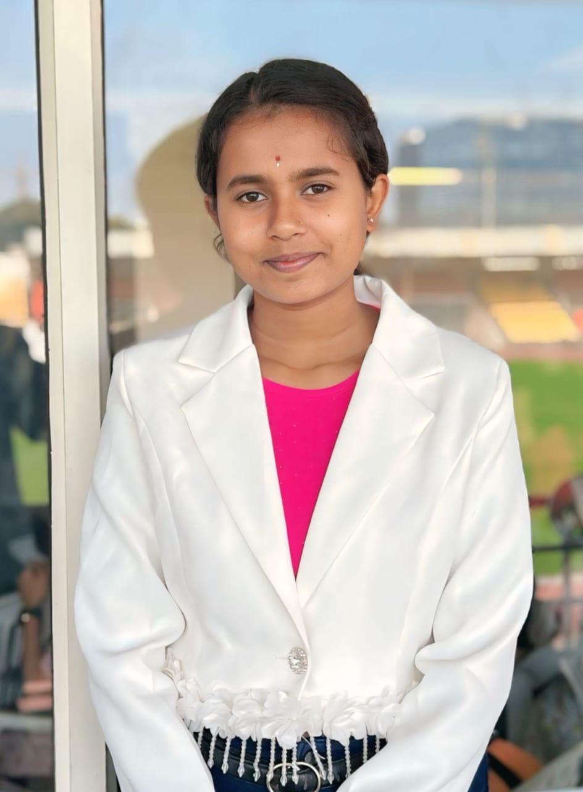

Chhatrapati Sambhajinagar is a historic and culturally rich city in Maharashtra, known for its magnificent monuments, ancient caves, and vibrant heritage. The city has been influenced by Mughal and Maratha history, making it a unique blend of architecture and tradition.
It is home to world-famous UNESCO heritage sites like Ajanta and Ellora caves, attracting tourists from across the globe. The city is also known as the "City of Gates" due to its strong historical fortifications.
This website is designed to provide complete information about Sambhajinagar, including its history, tourist destinations, food culture, and travel planning.
Our aim is to help travelers explore the city easily and plan their trips efficiently.

Web Developer